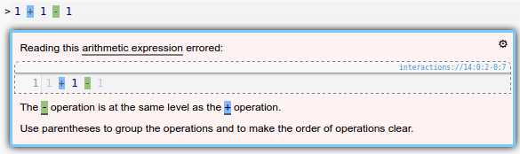

2.4 Operator Precedence
Note for non-American readers: if you’ve never heard of dear Aunt Sally, it’s a mnemonic often used to memorize a standard order-of-operations.
Pyret disallows mixing operators without clearly defining the operator precedence using parentheses. This includes all Binary Operators.
Therefore, the following expressions are not allowed:
1 + 1 - 1 1 + 1 > 1 1 + 1 == 2 (3 * 4 / 2) (3 * 4) / 1 + 1 3 * (4 / 2) + 1
And will raise an error like:

Conversely, these expressions are all valid in Pyret:
Any number of identical operators can be grouped without pairwise parentheses.
1 + (1 - 1) (1 + 1) > 1 1 + 1 + 1 1 - 1 - 1 (1 + 1) == 2 3 * (4 / 2) (3 * (4 / 2)) (3 * 4) / (1 + 1) (3 * (4 / 2)) + 1
Implicit operator precedence is a common source of errors among even experienced developers, so getting in the habit of explicitly defining precedence using parentheses is a good idea even when using languages that support implicit precedence.